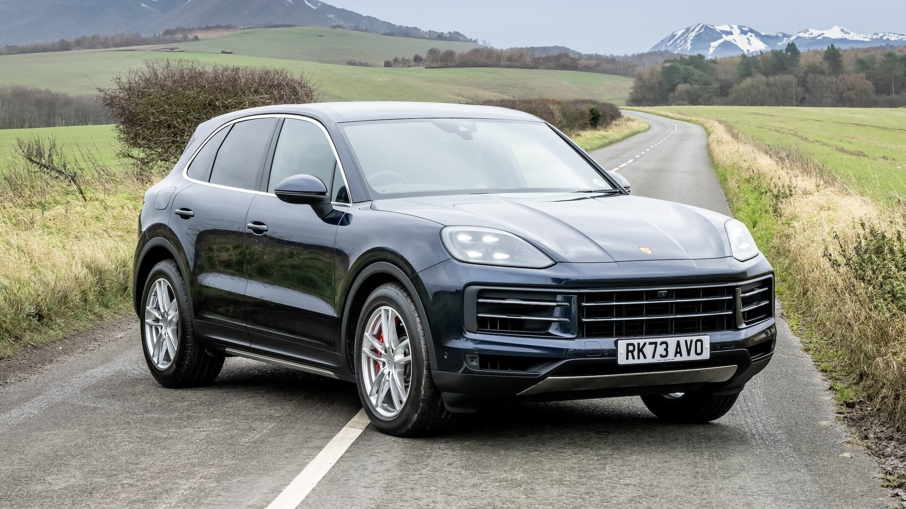
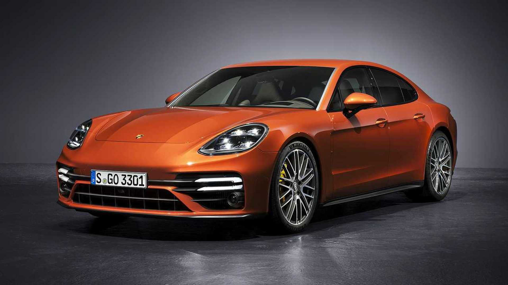

Porsche Története és Modelljei
A Porsche alapítása
A Porsche egy német autógyártó, amelyet 1931-ben alapított Ferdinand Porsche mérnök. A vállalat kezdetben autóipari tanácsadó cégeként indult, és hamarosan átvette a vezetést a prémium autógyártásban. A Porsche név a kiváló mérnöki munkát, innovációt és luxust jelképezi a mai napig.
Az első Porsche autó
Az első valódi Porsche autó a Porsche 356 volt, amelyet 1948-ban mutattak be. Ez az autó már a Porsche filozófiáját tükrözte, amely a sportos teljesítményt, az eleganciát és a precíz mérnöki munkát ötvözte. A Porsche 356 szinte azonnal népszerűvé vált a sportautók rajongói körében, és a márka hírnevét alapozta meg.
Porsche 356

A Porsche 356 volt az első sorozatgyártású Porsche modell, amelyet 1948-tól 1965-ig gyártottak. Az autó könnyű, sportos és rendkívül élvezetes vezetési élményt biztosított. A 356-os alapvetően az alapot adta a márka hírének, és segített létrehozni a Porsche sportautók klasszikus vonalait, mint a hátsó meghajtás és az alacsony súlypont.
Porsche 911

A Porsche 911, amelyet 1963-ban mutattak be, a márka legismertebb és legikonikusabb modellje. A 911-es a mai napig a sportautók szinonimájává vált. A 911-et különböző változatokban készítik, beleértve a Coupé, Cabriolet, Targa és a high-performance modelleket, mint a Turbo és a GT3. A 911-es azóta is folyamatosan fejlődik, a legújabb modellek hibrid technológiával is rendelkeznek, miközben megőrzik a klasszikus formát és teljesítményt.
Porsche Boxster

A Porsche Boxster egy kétüléses, nyitott sportautó, amelyet 1996-ban mutattak be. A Boxster nemcsak a márka fiatalabb rajongóinak szól, hanem azoknak is, akik szeretnék élvezni a Porsche vezetési élményét egy elérhetőbb árkategóriában. A Boxster szembetűnő a könnyed, sportos dizájnjával és a középmotoros elrendezéssel, amely optimális kezelhetőséget biztosít. A Boxster később a Cayman zárt változatával is bővült.
Porsche Cayenne
A Porsche Cayenne 2002-ben debütált, és jelentős mérföldkő volt a márka számára, mivel belépett a prémium SUV szegmensbe. A Cayenne, bár egy nagyobb és nehezebb jármű, megőrzi a Porsche sportos vezetési élményét, és azóta is a márka egyik legnagyobb sikerét jelentette. A Cayenne számos motorváltozattal elérhető, beleértve a hibrid és a turbófeltöltős modelleket is.
Porsche Panamera
A Porsche Panamera 2009-es bemutatása után gyorsan a luxus szedánok közé emelkedett. A Panamera a klasszikus Porsche teljesítményt és technológiai újításokat ötvözi egy négyajtós, prémium autóba, amely kényelmes utazást kínál anélkül, hogy kompromisszumot kellene kötni a vezetési élményben. A Panamera többféle motorváltozattal, köztük hibrid és V8-as erőforrásokkal is kapható.
Porsche Taycan

A Porsche Taycan a márka első teljesen elektromos sportautója, amelyet 2019-ben mutattak be. A Taycan egy új irányt képvisel a Porsche számára, amely a fenntarthatóságot és a sportautózást ötvözi. Az autó lenyűgöző teljesítményével és modern technológiai újításaival bizonyította, hogy az elektromos mobilitás is képes megtartani a Porsche vezetési élményét. A Taycan különböző modellekben kapható, beleértve a Taycan 4S-t, Turbo-t és Turbo S-t, mindegyik a legújabb elektromos hajtáslánccal és fejlett töltési lehetőségekkel rendelkezik.
Innováció és jövő
A Porsche folyamatosan a technológiai újítások és a teljesítmény határainak kitolására törekedett. Az évek során számos híres modellt hoztak létre, például a Porsche 918 Spyder hibrid sportautót, amely a legújabb technológiai fejlesztéseket ötvözi a klasszikus Porsche stílusával. A jövőben a márka továbbra is az elektromos mobilitás és a fenntarthatóság felé orientálódik, miközben megőrzi a hagyományos sportautózás iránti elkötelezettségét.